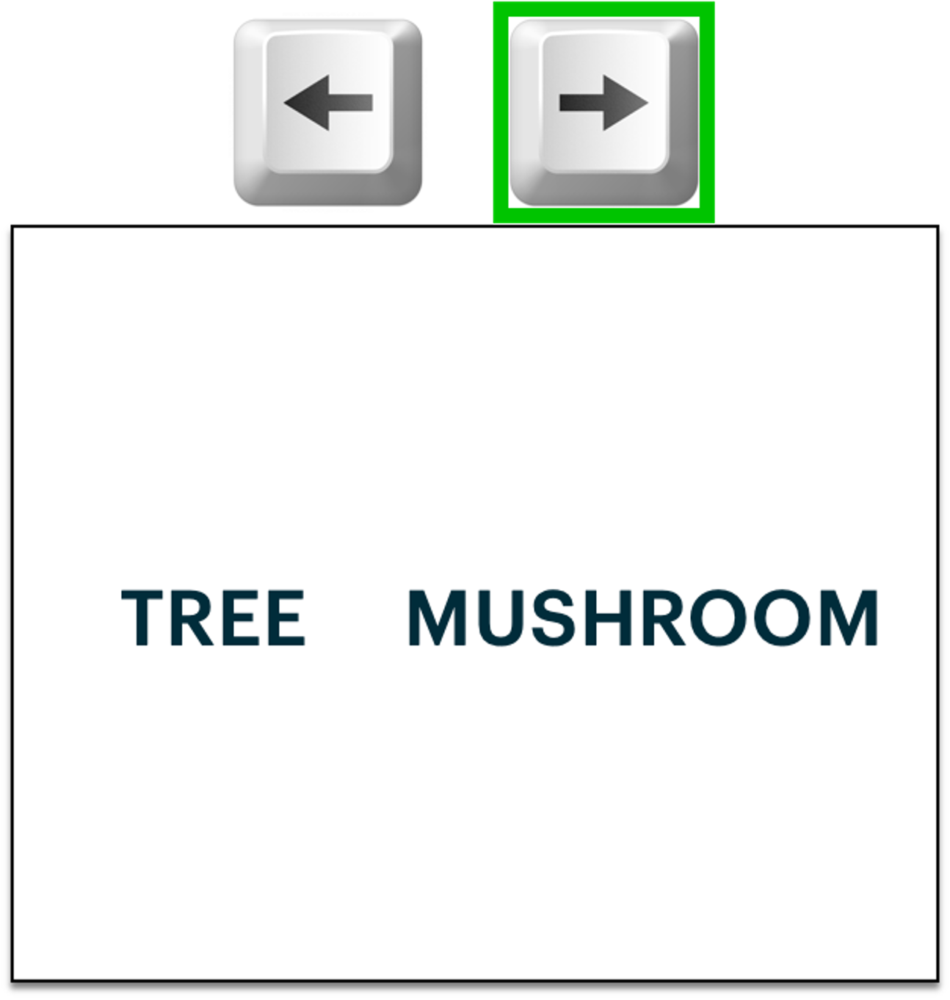

<!DOCTYPE html>
<html>
    <head>
        <title>Retrieve Experiment</title>
        <script src="jspsych-6.3.1/jspsych.js"></script>
        <link href="jspsych-6.3.1/css/jspsych.css" rel="stylesheet" type="text/css">
        <link rel="stylesheet" href="https://maxcdn.bootstrapcdn.com/bootstrap/4.0.0/css/bootstrap.min.css" integrity="sha384-Gn5384xqQ1aoWXA+058RXPxPg6fy4IWvTNh0E263XmFcJlSAwiGgFAW/dAiS6JXm" crossorigin="anonymous">        <script src="jspsych-6.3.1/plugins/jspsych-html-button-response.js"></script>
        <script src="jspsych-6.3.1/plugins/jspsych-html-keyboard-response.js"></script>
        <script src="jspsych-6.3.1/plugins/jspsych-instructions.js"></script>
        <script src="jspsych-6.3.1/plugins/jspsych-external-html.js"></script>
        <script src="jspsych-6.3.1/plugins/jspsych-preload.js"></script>
        <script src="jspsych-6.3.1/plugins/jspsych-fullscreen.js"></script>
        <script src="jspsych-6.3.1/plugins/jspsych-survey-text.js"></script>
        <script src="jspsych-6.3.1/plugins/jspsych-survey-multi-choice.js"></script>
        <script src="jspsych-6.3.1/plugins/jspsych-image-keyboard-response.js"></script>
        <script src="resources/materials/sequences.js"></script>
        <script src="resources/materials/r2_sequences.js"></script>
        <script src="resources/img/pair_lures.js"></script>
        <script src="resources/materials/counterbalancing_groups.js"></script>
        <script src="resources/materials/helpers.js"></script>
    </head>
    <body></body>
    <script>

        var start_time = new Date();

        var exp_type = jsPsych.data.urlVariables().exp;

        var timeline = [];

        /********************** Instructions **********************/
        var start_ins = 'Hi there!<br><br>Thank you for participating in our study.<br><br>\
                        There will be <b>three</b> games to play in this experiment.<br><br>\
                        The first will take 30 minutes, the second will take 20 minutes, and the last will take 15 minutes.<br><br>\
                        It is important that you pay attention and try your best through each game!<br>\
                        If you do well, you will be able to earn up to $3 in bonus pay.<br><br>\
                        Please press <i>Next</i> and read the following instructions carefully<br><br>';

        var practice_ins = '<br>You will first have the chance to <b>practice</b> this game to make sure you understand what we are asking you to do.<br><br>\
                            Once you have finished reading the instructions, please place your fingers on the arrow keys and click the right arrow to begin the practice.<br>\
                            After you have successfully completed the practice, you may begin the game.<br><br>';
        
        var training_ins = ['<br>Your first task is to <b>LEARN</b> and <b>REMEMBER</b> pairs of pictures!<br><br>\
                            During the <b>LEARNING</b> part, you will see 2 objects on the screen.\
                             Try your best to remember that these two objects go together.\
                             <br>\
                            You do not need to press any buttons while you are learning, just try to remember the pairs.<br><br>\
                            For example, you might see a paintbrush paired with a mushroom:<br><br>\
                            <div class="row">\
                                <div class="col">\
                                    \
                                </div>\
                            </div><br><br>\
                            Each pair will be on the screen for three and a half seconds.\
                            <br>\
                             Then, a plus sign will appear for a short time, followed by another pair. \
                             <br><br>\
                            We have found that imagining the two objects on the screen interacting helps people remember the pairs.\
                            <br>\
                             For example, you might imagine painting the mushroom with the paintbrush. \
                             Or, you might use words to help you remember the pair. \
                             <br>\
                             We will not ask you to tell us your story, so it can be as silly as you like!\
                              Just try to come up with something that helps you remember. \
                            <br><br>',

                            '<br>In the <b>REMEMBERING</b> part, your job is to show us how well you remember the pairs! \
                            <br><br>\
                            You will see one object on the top of the screen and two on the bottom. \
                            <br>\
                            You should pick which object on the bottom of the screen goes with the one on top. \
                            <br><br>\
                            Here is an example:<br><br>\
                            <br><br>\
                            Since we just learned that the paintbrush was paired with this mushroom in the <b>LEARNING</b> part, we should choose the left picture!\
                            <br><br>\
                             To pick the picture on the left, press the left arrow key ;\
                                 to pick the picture on the right, press the right arrow key .<br>\
                             In this example, we would press the left arrow key!\
                             <br><br>\
                            Sometimes you will choose between objects of <b>different kinds</b>, like the mushroom and tree, and \
                            <br>\
                            sometimes you will choose between objects of the <b>same kind</b>, like two different mushrooms.\
                            <br><br>\
                            In the real experiment, you will not see mushrooms but instead <b>apples, shells, leaves,</b> and <b>rocks</b> will be paired with everyday objects.\
                            <br><br>\
                            You will have as long as you need to make your choice.\
                            Try to respond as fast and accurately as you can!\
                            <br>\
                            If you are unsure of the correct answer, that is OK, just make your best guess.\
                            After you make your response, we will show you whether you were correct.\
                            <br>\
                            A green checkmark will appear below the correct object, and a red X below the incorrect answer.\
                            <br>\
                            A sound will also play indicating whether you chose the correct item.\
                            <br><br>',

                            '<br>For this game, you will study every pair during <b>LEARNING</b> parts.\
                            <br>\
                             After each <b>LEARNING</b> part, you will do a <b>REMEMBERING</b> part. \
                             <br><br>\
                             You will learn and remember the pairs 8 times, so you will have lots of chances to learn them!\
                             <br>\
                             Afterwards, there will be a final <b>REMEMBERING</b> game. \
                              <br><br>\
                            After each <b>REMEMBERING</b> part, you will see a screen with your level in the game so far.\
                            Your game piece is a rocket. \
                            Based on your progress through the games, your rocket will move closer toward Earth. \
                            You will earn bonus money when you get to Saturn ($1) and when you reach Earth (a total of $2). \
                            <br><br>\
                            Your goal is to get to Earth before the experiment is over!<br><br>\
                            <div style="position: relative; top: 0; left: 0;">\
                                \
                            </div></div><br><br>',
                            practice_ins
                            ];

        var train_test_ins = ['Great job on the <b>LEARNING & REMEMBERING</b> game!\
                                <br>\
                                 You will now play the final <b>REMEMBERING</b> part before moving on to the next games in the experiment.\
                                 <br><br>\
                                For this part, you will see different types of remembering questions. \
                                An object will always appear on the top of the screen. \
                                <br>\
                                On the bottom of the screen, there will either be two images of objects or two words to choose from.<br> \
                                For both, pick which bottom option was paired with the object on top.\
                                <br><br>\
                                For example, here are the different questions you could see for the paintbrush-mushroom pair:<br><br>\
                                <div class="row">\
                                    <div class="col">\
                                        \
                                    </div>\
                                </div><br>\
                                For the left and middle questions, we should pick the mushroom that was paired with the paintbrush during learning.\
                                <br>\
                                For the question on the right, we should pick the word “MUSHROOM” (right) since it was a mushroom, and not a tree, that was paired with the paintbrush.\
                                <br>\
                                <b>In the game, you will not know if you chose correctly.</b>\
                                <br><br>\
                                In the actual game, the possible words you could see will be: <b>LEAF, APPLE, ROCK,</b> or <b>SHELL</b>.\
                                <br><br>\
                                You will have as much time as you need to answer the question. If you cannot remember after a few seconds, make your best guess.\
                                <br><br>\
                                There will be breaks in this game to show your level.\
                                 Your goal is to get to Earth by the end of the experiment!\
                                 <br><br>',
                                practice_ins
                            ];

        var retrieve1_ins = ['<br>Good job on the <b>LEARNING & REMEMBERING</b> game!\
                             <br><br>\
                            Your next task will be to remember the pairs you just learned in another way. \
                            <br><br>\
                            For this <b>MEMORY</b> game, a plus sign will appear on the screen for a short time. \
                            Then, you will see an object for one and a half seconds.\
                            <br>\
                            After the object, there will be a long delay where only a star appears on screen.\
                            <br>\
                            During this time, you should try to remember the item that was paired with the object you saw before. \
                            <br>\
                            <u>Try to remember the item and hold it in your mind</u>. \
                            Then two item pictures or words will show up on the screen.\
                            <br><br>\
                            Your job is to tell us which item was paired with the object.\
                             Which item matches the one you were thinking about?\
                             <br><br>\
                            Here is an example of the screens you might see, starting with the left (plus sign) and ending at the right:<br><br>\
                            <br><br>\
                            In the last screen (far right), you will see two options.\
                            In this example, these are two different mushrooms. \
                            <br><br>\
                            If the item on the <b>LEFT</b> was paired with the object shown before (paintbrush), press the left arrow key .<br>\
                            If the item on the <b>RIGHT</b> was paired with the object, press the right arrow key .<br>\
                            For this example, you should choose the left picture since the paintbrush was paired with this particular mushroom in the <b>LEARNING & REMEMBERING</b> game.\
                            <br><br>\
                            The green highlights the correct key response in this example. \
                                In the game you will not know if you chose correctly.\
                                <br><br>\
                            Try to respond as fast as you can on the final screen.\
                            <b>You only have 1 second to respond.</b> \
                            <br>\
                            It will help you respond in time if you have tried to remember the paired item before the pictures or words to come up.<br><br>',
                            
                            '<br>There are <b>three</b> possible questions that may show up after the delay on the last screen. \
                            <br><br>\
                            For one question type, you must choose which of two items of the same kind was paired with the object, <br>\
                            for example, choosing between two different mushrooms.\
                            <br><br>\
                            For the second question type, you must choose which of two pictures of different kinds was paired with the object, for example a mushroom and a tree:<br><br>\
                               <div class="row" style="display: flex; align-items:center;">\
                                    <div class="col">\
                                        \
                                    </div>\
                               </div><br><br>\
                            For the third question type, you must choose which word describes the item paired with the object, for example “MUSHROOM” or “TREE”:<br><br>\
                                <div class="row" style="display: flex; align-items:center;">\
                                    <div class="col">\
                                        \
                                    </div>\
                                </div><br><br>\
                                There will be breaks in the <b>MEMORY</b> game to show your level. \
                                Your goal is to get to Earth before the games are over!<br><br>',
                                practice_ins
                            ];

        var goal_cue_names = ['blue triangle', 'green circle'];
        if (['5', '6', '7', '8'].includes(exp_type)) {
            goal_cue_names = ['green circle', 'blue triangle']
        }
        var goal_cue_ex = 'resources/img/instructions/r2_ex1_gr1-4.png';
        if (['5', '6', '7', '8'].includes(exp_type)) {
            goal_cue_ex = 'resources/img/instructions/r2_ex1_gr5-8.png';
        }
        var retrieve2_ins = ['<br> Good job on the <b>MEMORY</b> game!\
                                <br><br>\
                            For the last <b>CLUE MEMORY</b> game, you will again remember the pairs you learned, but this time you will get a clue about the type of question that is coming.\
                            <br><br>\
                            Like the previous <b>MEMORY</b> game, a plus sign will first appear on the screen, and then an object. \
                            <br>\
                            After the object, you will see either a blue triangle or a green circle, which is a clue about what kind of question is coming. \
                            <br>\
                            Then there will be a long delay with just a star in the middle of the screen. \
                            <br>\
                            During this time, try to remember the item that was paired with the object you saw before and <u>hold it in your mind</u>. \
                            <br><br>\
                            If the shape shown after the object was a <b>'+goal_cue_names[0]+'</b>, then you will usually, but not always, choose between two items of the same kind after the delay. \
                            <br>\
                            Your job is to tell us which of the items shown was paired with the object!\
                            <br><br>\
                            If the shape shown after the object was a <b>'+goal_cue_names[1]+'</b>, then you will usually, but not always, choose between two words. \
                            <br>\
                            Your job is to tell us which word describes the item that was paired with the object! \
                            <br><br>\
                            Most of the time, the clue shape will tell you what kind of choice you will be making next, so it is best to use it to prepare!\
                            <br><br>\
                            Here is an example of the screens you might see in order, starting at the left (plus sign) and moving to the right:<br><br>\
                                <br><br>\
                            On the last screen (far right), if the picture or word on the <b>LEFT</b> was paired with the object, press the left arrow key .<br>\
                            If the picture or word on the <b>RIGHT</b> was paired with the object, press the right arrow key .<br><br>\
                            Try to respond as fast as you can. <b>You only have 1 second to respond.</b> \
                            <br><br>\
                            If you do well on this task, you can earn a <b>$1 bonus</b>! \
                            Make sure to use the clue so you can respond as quickly and accurately as possible.<br><br>',

                                '<br>You will first be <b>quized</b> on the clues (triangle and circle) to make sure you understand what they mean.<br><br>\
                                Once you have finished reading the instructions, please press <i>Next</i> to begin the quiz.<br>\
                                After you have successfully completed the quiz, you may begin the practice and then the game.<br><br>'
                            ];
        
        var r2_practice_ins = '<br>You will next have the chance to <b>practice</b> this game to make sure you understand.<br><br>\
                            Please place your fingers on the arrow keys and click the right arrow to begin the practice. <br>\
                            After you have successfully completed the practice, you may begin the game.<br><br>';

        var reward_ins_final = ['Fantastic work!<br><br> Your final level is: ', 
                                '<br><br>You have almost completed the experiment. Now you will be directed to a brief survey on your experience.<br>\
                                 You will receive compensation only after completing the survey.<br><br>'];

        /********************** Set-up *********************/
        var img_size = 50;

        // general experiment settings
        var instruction_time  = 5000;
        var num_pairs = 24; // 24
        var score_time = 20000;

        // Training
        var fixation_time = 500;
        var pair_time = 3500;
        var training_q_time = 1500;
        var study_ins = '<b>LEARNING</b> part will begin in 90 seconds.';
        var test_ins='<b>REMEMBERING</b> part will begin in 90 seconds.';
        var training_reps = 4; // 4
        var pos_feedback_aud = 'resources/audio/positive.wav';
        var neg_feedback_aud = 'resources/audio/negative.wav';
 
        // Retreive
        var rITI = [1500, 3500, 5500]; // 0.5s + 1,3,or 5s
        var delay_time = 6000;
        var b_cue_time = 1500;
        var goal_cue_time = 1000;
        var retrieve_q_time = 1000;
        var retrieve_block_ins = 'Game will resume in 90 seconds';

        
        // stimuli
        var training_A = [
            {image:'resources/img/A_items/apple/apple1.jpg', category: 'apple'},
            {image:'resources/img/A_items/apple/apple2.jpg', category: 'apple'},
            {image:'resources/img/A_items/apple/apple3.jpg', category: 'apple'},
            {image:'resources/img/A_items/apple/apple4.jpg', category: 'apple'},
            {image:'resources/img/A_items/apple/apple5.jpg', category: 'apple'},
            {image:'resources/img/A_items/apple/apple6.jpg', category: 'apple'},
            {image:'resources/img/A_items/leaf/leaf1.jpg', category: 'leaf'},
            {image:'resources/img/A_items/leaf/leaf2.jpg', category: 'leaf'},
            {image:'resources/img/A_items/leaf/leaf3.jpg', category: 'leaf'},
            {image:'resources/img/A_items/leaf/leaf4.jpg', category: 'leaf'},
            {image:'resources/img/A_items/leaf/leaf5.jpg', category: 'leaf'},
            {image:'resources/img/A_items/leaf/leaf6.jpg', category: 'leaf'},
            {image:'resources/img/A_items/rock/rock1.jpg', category: 'rock'},
            {image:'resources/img/A_items/rock/rock2.jpg', category: 'rock'},
            {image:'resources/img/A_items/rock/rock3.jpg', category: 'rock'},
            {image:'resources/img/A_items/rock/rock4.jpg', category: 'rock'},
            {image:'resources/img/A_items/rock/rock5.jpg', category: 'rock'},
            {image:'resources/img/A_items/rock/rock6.jpg', category: 'rock'},
            {image:'resources/img/A_items/shell/shell1.jpg', category: 'shell'},
            {image:'resources/img/A_items/shell/shell2.jpg', category: 'shell'},
            {image:'resources/img/A_items/shell/shell3.jpg', category: 'shell'},
            {image:'resources/img/A_items/shell/shell4.jpg', category: 'shell'},
            {image:'resources/img/A_items/shell/shell5.jpg', category: 'shell'},
            {image:'resources/img/A_items/shell/shell6.jpg', category: 'shell'},
        ];
        training_A = jsPsych.randomization.shuffle(training_A, num_pairs);
        var training_B = [
            "resources/img/B_items/B24.jpg",
            "resources/img/B_items/B1.jpg",
            "resources/img/B_items/B2.jpg",
            "resources/img/B_items/B3.jpg",
            "resources/img/B_items/B4.jpg",
            "resources/img/B_items/B5.jpg",
            "resources/img/B_items/B6.jpg",
            "resources/img/B_items/B7.jpg",
            "resources/img/B_items/B8.jpg",
            "resources/img/B_items/B9.jpg",
            "resources/img/B_items/B10.jpg",
            "resources/img/B_items/B11.jpg",
            "resources/img/B_items/B12.jpg",
            "resources/img/B_items/B13.jpg",
            "resources/img/B_items/B14.jpg",
            "resources/img/B_items/B15.jpg",
            "resources/img/B_items/B16.jpg",
            "resources/img/B_items/B17.jpg",
            "resources/img/B_items/B18.jpg",
            "resources/img/B_items/B19.jpg",
            "resources/img/B_items/B20.jpg",
            "resources/img/B_items/B21.jpg",
            "resources/img/B_items/B22.jpg",
            "resources/img/B_items/B23.jpg"
        ];
        training_B = jsPsych.randomization.shuffle(training_B, num_pairs);
        var goal_cues = [];
        if (['1','2','3','4'].includes(exp_type)) {
            goal_cues = ['resources/img/goal_cues/triangle.png', 'resources/img/goal_cues/circle.png'];
        } else {
            goal_cues = ['resources/img/goal_cues/circle.png', 'resources/img/goal_cues/triangle.png'];
        }
        var practice_img = [
            'resources/img/practice/AT1.jpg',
            'resources/img/practice/AT2.jpg',
            'resources/img/practice/AT3.jpg',
            'resources/img/practice/AT4.jpg',
            'resources/img/practice/BT1.jpg',
            'resources/img/practice/BT2.jpg',
            'resources/img/practice/BT3.jpg',
            'resources/img/practice/BT4.jpg',
        ]
        var ins_img = [
            'resources/img/instructions/keyboard_key_left.png',
            'resources/img/instructions/keyboard_key_right.png',
            'resources/img/instructions/r1_ex1_general.png',
            'resources/img/instructions/r1_ex1_neutral.png',
            'resources/img/instructions/r1_ex1_specific.png',
            'resources/img/instructions/r1_ex1_opts.png',
            'resources/img/instructions/r2_ex1_gr1-4.png',
            'resources/img/instructions/r2_ex1_gr5-8.png',
            'resources/img/instructions/retrieve1_ex1.png',
            'resources/img/instructions/reward_screen_1.png',
            'resources/img/instructions/reward_screen_2.png',
            'resources/img/instructions/reward_screen_3.png',
            'resources/img/instructions/reward_screen_4.png',
            'resources/img/instructions/reward_screen_5.png',
            'resources/img/instructions/reward_screen_6.png',
            'resources/img/instructions/reward_screen_7.png',
            'resources/img/instructions/study_ex1.png',
            'resources/img/instructions/test_ex1_general.png',
            'resources/img/instructions/test_ex1_specific.png',
            'resources/img/instructions/test_ex1_neutral.png',
            'resources/img/instructions/test_ex1.png',
            'resources/img/instructions/check.png',
            'resources/img/instructions/ex.png',
        ]

        // preload images
        var preload = {
            type: 'preload',
            images: training_A.map(a => a.image).concat(training_B, practice_img, ins_img, goal_cues)
        };


        // sequences - selected to roughly balance out number of each transition type across whole experiment
        var retrieve_sequences = []; // training test (3 blocks), retrieve 1 (3 blocks)
        var retrieve_sequences2 = [] // retrieve 2 (2 blocks) sequences
        switch(exp_type) {
            case '1':
            case '5':
                // Retrieve1: 0,1,2,3,4,8; Retrieve2: 0, 4
                retrieve_sequences = retrieve_seq_options.slice(0,5).concat(retrieve_seq_options.slice(8,9));
                retrieve_sequences2 = retrieve2_seq_options.slice(0,1).concat(retrieve2_seq_options.slice(4,5));
                break;
            case '2':
            case '6':
                // Retrieve1: 5,6,7,9,10,12; Retrieve2: 1, 10
                retrieve_sequences = retrieve_seq_options.slice(5,8).concat(retrieve_seq_options.slice(9,11), retrieve_seq_options.slice(12,13));
                retrieve_sequences2 = retrieve2_seq_options.slice(1,2).concat(retrieve2_seq_options.slice(10,11));
                break;
            case '3':
            case '7':
                // Retrieve1: 11,13,14,15,16,19; Retrieve2: 6, 7
                retrieve_sequences = retrieve_seq_options.slice(11,12).concat(retrieve_seq_options.slice(13,17), retrieve_seq_options.slice(19,20));
                retrieve_sequences2 = retrieve2_seq_options.slice(6,8);
                break;
            case '4':
            case '8':
                // Retrieve1: 17,18,20,22,24,27; Retrieve2: 8,14
                retrieve_sequences = retrieve_seq_options.slice(17,19).concat(retrieve_seq_options.slice(20,21), retrieve_seq_options.slice(22,23), retrieve_seq_options.slice(24,25), retrieve_seq_options.slice(27,28));
                retrieve_sequences2 = retrieve2_seq_options.slice(8,9).concat(retrieve2_seq_options.slice(14,15));
                break;

        }
        // shuffle sequence block order
        retrieve_sequences = jsPsych.randomization.shuffle(retrieve_sequences).concat(jsPsych.randomization.shuffle(retrieve_sequences2))


        // pairs
        var B_cats = counterbalancing_groups.filter(a => a.group == exp_type);

        var pairs = []
        var lure_opts = pair_lures;
        for (i = 0; i < num_pairs; i+=1) {

            // assign to random stimulus ID within correct category (e.g. 'Ap1', 'Ap2', 'Ap3'), with corresponding lures
            var lures = jsPsych.randomization.sampleWithoutReplacement(lure_opts.filter(a => a.A_category == training_A[i].category), 1)[0];
            lure_opts = lure_opts.filter(a => a.pair != lures.pair); // remove from option list
            var B = jsPsych.randomization.sampleWithoutReplacement(B_cats.filter(a=>a.A_category == training_A[i].category).map(a=>a.B_item), 1)[0];
            B_cats = B_cats.filter(a => a.B_item != B);
            
            // create random AB pairs
            pairs.push({
                A: training_A[i].image,
                B: 'resources/img/B_items/'.concat(B),
                A_category: training_A[i].category,
                lures: lures
            });
        }

        // pairs: add sequence order (for each test/retrieve block)
        var block_labels = ["train_test_block1", "train_test_block2", "train_test_block3", "r1_block1", "r1_block2", "r1_block3", "r2_block1", "r2_block2"];
        for (block = 0; block < 8; block+=1) {
            var seq = retrieve_sequences[block];
            var block_label = block_labels[block];

            // trials in sequence that are general, specific, or neutral
            var g_idx = seq.map((x, i) => x === 'general' ? i : -1).filter(index => index !== -1);
            var s_idx = seq.map((x, i) => x === 'specific' ? i : -1).filter(index => index !== -1);
            var n_idx = seq.map((x, i) => x === 'neutral' ? i : -1).filter(index => index !== -1);

            // pairs that should be tested as general, specific, or neutral in this block
            var g_pairs = jsPsych.randomization.shuffle(pairs.filter(a => a.lures[block_label] == 'general'));
            var s_pairs = jsPsych.randomization.shuffle(pairs.filter(a => a.lures[block_label] == 'specific'));
            var n_pairs = jsPsych.randomization.shuffle(pairs.filter(a => a.lures[block_label] == 'neutral'));

            // training
            if (block<3) {
                // assign a sequence index to each pair
                if (block==0) {
                    g_pairs = g_pairs.map((x, idx) => ({...x, ttorder: [g_idx[idx]]}));
                    s_pairs = s_pairs.map((x, idx) => ({...x, ttorder: [s_idx[idx]]}));
                    n_pairs = n_pairs.map((x, idx) => ({...x, ttorder: [n_idx[idx]]}));
                }
                else {
                    g_pairs = g_pairs.map((x, idx) => ({...x, ttorder:  x["ttorder"].concat(g_idx[idx])}));
                    s_pairs = s_pairs.map((x, idx) => ({...x, ttorder:  x["ttorder"].concat(s_idx[idx])}));
                    n_pairs = n_pairs.map((x, idx) => ({...x, ttorder:  x["ttorder"].concat(n_idx[idx])}));
                }
            }
           
            // retrieval 1
            if (block>=3 & block<6) {
                if (block == 3) {
                    g_pairs = g_pairs.map((x, idx) => ({...x, r1order: [g_idx[idx]]}));
                    s_pairs = s_pairs.map((x, idx) => ({...x, r1order: [s_idx[idx]]}));
                    n_pairs = n_pairs.map((x, idx) => ({...x, r1order: [n_idx[idx]]}));
                }
                else {
                    g_pairs = g_pairs.map((x, idx) => ({...x, r1order:  x["r1order"].concat(g_idx[idx])}));
                    s_pairs = s_pairs.map((x, idx) => ({...x, r1order:  x["r1order"].concat(s_idx[idx])}));
                    n_pairs = n_pairs.map((x, idx) => ({...x, r1order:  x["r1order"].concat(n_idx[idx])}));
                }
            }

            // retrieval 2
            if (block>=6) {
                if (block == 6) {
                    g_pairs = g_pairs.map((x, idx) => ({...x, r2order: [g_idx[idx]]}));
                    s_pairs = s_pairs.map((x, idx) => ({...x, r2order: [s_idx[idx]]}));
                    n_pairs = n_pairs.map((x, idx) => ({...x, r2order: [n_idx[idx]]}));
                }
                else {
                    g_pairs = g_pairs.map((x, idx) => ({...x, r2order:  x["r2order"].concat(g_idx[idx])}));
                    s_pairs = s_pairs.map((x, idx) => ({...x, r2order:  x["r2order"].concat(s_idx[idx])}));
                    n_pairs = n_pairs.map((x, idx) => ({...x, r2order:  x["r2order"].concat(n_idx[idx])}));
                }
            }

            pairs = g_pairs.concat(s_pairs).concat(n_pairs);

        }

        // Training tests (neutral, blocks 1-4): separate columns of lure mappings and shuffle column order
        var stim_t_neutral = jsPsych.randomization.shuffle([
                    pairs.map((x, idx) => ({...x, A_item: x["lures"].A_item, lure: x["lures"].n_train_1, question: 'neutral', phase: 'train'})),
                    pairs.map((x, idx) => ({...x, A_item: x["lures"].A_item, lure: x["lures"].n_train_2, question: 'neutral', phase: 'train'})),
                    pairs.map((x, idx) => ({...x, A_item: x["lures"].A_item, lure: x["lures"].n_train_3, question: 'neutral', phase: 'train'})),
                    ]);
        stim_t_neutral[3] = pairs.map((x, idx) => ({...x, A_item: x["lures"].A_item, lure: x["lures"].n_train_4, question: 'neutral', phase: 'train'}));
        for (i=0; i<stim_t_neutral.length; i++) { // shuffle testing order of pairs
            stim_t_neutral[i] = jsPsych.randomization.shuffleNoRepeats(stim_t_neutral[i],  function(a,b) { return a.A_category === b.A_category}, 3);
        }


        // Training tests (specific, blocks 5-8): separate columns of lure mappings and shuffle column order
        var stim_t_specific = jsPsych.randomization.shuffle([
                    pairs.map((x, idx) => ({...x, A_item: x["lures"].A_item,lure: x["lures"].s_train_1, question: 'specific', phase: 'train'})),
                    pairs.map((x, idx) => ({...x, A_item: x["lures"].A_item,lure: x["lures"].s_train_2, question: 'specific', phase: 'train'})),
                    pairs.map((x, idx) => ({...x, A_item: x["lures"].A_item,lure: x["lures"].s_train_3, question: 'specific', phase: 'train'})),
                    pairs.map((x, idx) => ({...x, A_item: x["lures"].A_item,lure: x["lures"].s_train_4, question: 'specific', phase: 'train'}))]);
        for (i=0; i<stim_t_specific.length; i++) { // shuffle testing order of pairs
            stim_t_specific[i] = jsPsych.randomization.shuffleNoRepeats(stim_t_specific[i],  function(a,b) { return a.A_category === b.A_category}, 3);
        }


        // Training final test (blocks 1-3)
        var stim_t_test = [
                    pairs.map((x, idx) => ({...x, A_item: x["lures"].A_item, order: x["ttorder"][0], 
                                                  question: x["lures"].train_test_block1, 
                                                  phase: 'train_test',
                                                  lure: x["lures"][x["lures"].train_test_block1.substring(0,1)+"_train_test"]})).sort((a,b)=> (a.order > b.order ? 1 : -1)),
                    pairs.map((x, idx) => ({...x, A_item: x["lures"].A_item, order: x["ttorder"][1], 
                                                  question: x["lures"].train_test_block2, 
                                                  phase: 'train_test',
                                                  lure: x["lures"][x["lures"].train_test_block2.substring(0,1)+"_train_test"]})).sort((a,b)=> (a.order > b.order ? 1 : -1)),
                    pairs.map((x, idx) => ({...x, A_item: x["lures"].A_item, order: x["ttorder"][2], 
                                                  question: x["lures"].train_test_block3, 
                                                  phase: 'train_test',
                                                  lure: x["lures"][x["lures"].train_test_block3.substring(0,1)+"_train_test"]})).sort((a,b)=> (a.order > b.order ? 1 : -1))];

        // Retrieve 1 (blocks 1-3)
        var stim_r1 = [
                    pairs.map((x, idx) => ({...x, A_item: x["lures"].A_item, order: x["r1order"][0], 
                                                  question: x["lures"].r1_block1, 
                                                  phase: 'r1',
                                                  block: 1,
                                                  lure: x["lures"][x["lures"].r1_block1.substring(0,1)+"_r1"]})).sort((a,b)=> (a.order > b.order ? 1 : -1)),
                    pairs.map((x, idx) => ({...x, A_item: x["lures"].A_item, order: x["r1order"][1], 
                                                  question: x["lures"].r1_block2, 
                                                  phase: 'r1',
                                                  block: 2,
                                                  lure: x["lures"][x["lures"].r1_block2.substring(0,1)+"_r1"]})).sort((a,b)=> (a.order > b.order ? 1 : -1)),
                    pairs.map((x, idx) => ({...x, A_item: x["lures"].A_item, order: x["r1order"][2], 
                                                  question: x["lures"].r1_block3, 
                                                  phase: 'r1',
                                                  block: 3,
                                                  lure: x["lures"][x["lures"].r1_block3.substring(0,1)+"_r1"]})).sort((a,b)=> (a.order > b.order ? 1 : -1))];


        // Retrieve 2 (blocks 1-2)
        var stim_r2 = [
                    pairs.map((x, idx) => ({...x, A_item: x["lures"].A_item, order: x["r2order"][0], 
                                                  question: x["lures"].r2_block1, 
                                                  phase: 'r2',
                                                  block: 1,
                                                  lure: x["lures"][x["lures"].r2_block1.substring(0,1)+"_r2"],
                                                })).sort((a,b)=> (a.order > b.order ? 1 : -1),),
                    pairs.map((x, idx) => ({...x, A_item: x["lures"].A_item, order: x["r2order"][1], 
                                                  question: x["lures"].r2_block2, 
                                                  phase: 'r2',
                                                  block: 2,
                                                  lure: x["lures"][x["lures"].r2_block2.substring(0,1)+"_r2"],
                                                })).sort((a,b)=> (a.order > b.order ? 1 : -1))];

        var invalid_pairs = jsPsych.randomization.sampleWithoutReplacement(stim_r2[0].filter(a=>a.A_category == 'apple' && a.order>8), 1); // pairs where cue will be invalid (1 from each group)
        invalid_pairs = invalid_pairs.concat(jsPsych.randomization.sampleWithoutReplacement(stim_r2[0].filter(a=>a.A_category == 'leaf' && a.order>8), 1));
        invalid_pairs = invalid_pairs.concat(jsPsych.randomization.sampleWithoutReplacement(stim_r2[0].filter(a=>a.A_category == 'rock' && a.order>8), 1));
        invalid_pairs = invalid_pairs.concat(jsPsych.randomization.sampleWithoutReplacement(stim_r2[0].filter(a=>a.A_category == 'shell' && a.order>8), 1));
        invalid_pairs = invalid_pairs.map(a=>a.A);

        stim_r2 = [stim_r2[0].map((x, idx) => ({...x, q_valid: !invalid_pairs.includes(x["A"])})), stim_r2[1].map((x, idx) => ({...x, q_valid: !invalid_pairs.includes(x["A"])}))];

        /**************************************************** subject ID ****************************************************/
    
        // Subject id = subject number + group condition
        var subjectID_survey = {
            type: 'survey-text',
            questions: [
                {prompt: 'Subject Number:', name: 'subject_id', rows: 1, columns:10, required:true},
                {prompt: 'Age:', name: 'age', rows: 1, columns:10, required:true},
            ],
            data: {
                exp_section: 'subjectid_survey'
            },
            button_label: 'Start',
        }

        /*************************************************** Instructions **************************************************/
        
        var fullscreen = {
            type: 'fullscreen',
            fullscreen_mode: true
        }
        
        // Get participant consent
        var consent = {
            timeline: [
                {
                    type: 'external-html',
                    url: "resources/materials/consent.html",
                    cont_btn: "start",
                    check_fn: function(elem) {
                        if (document.getElementById('agree_checkbox').checked) {                             
                            return true;
                        } else {
                            alert("If you wish to participate, you must check the box next to the statement 'I agree.'");
                            return false;
                        }
                        return false;
                    },
                    data: {disp_type: 'online_consent_form'}
                }
            ]
        }

        var start_instructions = {
            type: 'instructions',
            pages: [start_ins],
            show_clickable_nav: true,
            show_page_number: true,
            on_start: function() {
                // set progress bar to 0 at the start of experiment
                jsPsych.setProgressBar(0);
            }
        };

        /********************** Training *********************/
        var training_instructions = {
            type: 'instructions',
            pages: training_ins,
            show_clickable_nav: true,
            show_page_number: true
        }

        /* 1) STUDY */

        var countdown = {
            timeline: [
                {

                    type: 'html-keyboard-response',
                    stimulus: '<p style="font-size:60px;">3</p>',
                    trial_duration: 1000,
                    response_ends_trial: false,
                },
                {
                    type: 'html-keyboard-response',
                    stimulus: '<p style="font-size:60px;">2</p>',
                    trial_duration: 1000,
                    response_ends_trial: false,
                },
                {
                    type: 'html-keyboard-response',
                    stimulus: '<p style="font-size:60px;">1</p>',
                    trial_duration: 1000,
                    response_ends_trial: false,
                }
            ]
        }
        var study_instructions = {
            type: 'html-keyboard-response',
            stimulus: study_ins,
            trial_duration: instruction_time
        }

        var fixation = {
            type: 'html-keyboard-response',
            stimulus: '<div style="font-size:60px;">+</div>',
            choices: jsPsych.NO_KEYS,
            trial_duration: fixation_time,
        };

        var fixation_practice = {
            type: 'html-keyboard-response',
            stimulus: '<div style="font-size:60px;">+</div>',
            choices: jsPsych.NO_KEYS,
            practice: true,
            trial_duration: fixation_time,
        };

        // view AB pair
        var training_trial = {
            type: 'html-keyboard-response',
            stimulus: function() {
                var pair = jsPsych.randomization.shuffle([jsPsych.timelineVariable('A'), jsPsych.timelineVariable('B')]);
                return '<div class="row">\
                            <div class="col">\
                                \
                            </div>\
                            <div class="col">\
                                \
                            </div>\
                       </div>'
                },
            choices: jsPsych.NO_KEYS,
            prompt: "",
            trial_duration: pair_time,
            data: {
                exp_section: 'study',
                A_item: jsPsych.timelineVariable('A'),
                B_item: jsPsych.timelineVariable('B'),
                A_category: jsPsych.timelineVariable('A_category')
            },
            on_finish: function() {
                var curr_progress_bar_value = jsPsych.getProgressBarCompleted();
                jsPsych.setProgressBar(curr_progress_bar_value + (1/24));
            }
        };

        /* 2) TEST */

        var test_instructions = {
            type: 'html-keyboard-response',
            stimulus: test_ins,
            trial_duration: instruction_time,
            on_start: function() {
                jsPsych.setProgressBar(0);
            }
        }
        
        // 2AFC cued with B item to select paired A item
        var train_test_trial = {
            type: 'html-keyboard-response',
            stimulus: function() {
               return AFC_display(jsPsych.timelineVariable('A'), jsPsych.timelineVariable('B'), 
                                  jsPsych.timelineVariable('A_category'), jsPsych.timelineVariable('question'),
                                  jsPsych.timelineVariable('lure'), true);
            },
            choices: ['ArrowLeft','ArrowRight'],
            prompt: "",
            //trial_duration: training_q_time,
            response_ends_trial: true,
            buffer_duration: function() {
                if (jsPsych.timelineVariable('phase') =='train_test') {
                    return 100;
                } else {
                    return 1000;
                }
            },
            feedback: function() {
                if (jsPsych.timelineVariable('phase') =='train_test') {
                    return false;
                } else {
                    return true;
                }
            },
            data: {
                exp_section: 'training_test',
                A_item: jsPsych.timelineVariable('A'),
                A_category: jsPsych.timelineVariable('A_category'),
                B_item: jsPsych.timelineVariable('B'),
                question: jsPsych.timelineVariable('question'),
                phase: jsPsych.timelineVariable('phase')
            },
            on_finish: function(data) {
                data.correct = is_correct(data)
                console.log(data.correct); 
                data.A_foil = A_foil;
                data.choices = choices;

                var curr_progress_bar_value = jsPsych.getProgressBarCompleted();
                if (jsPsych.timelineVariable('phase') =='train_test') {
                    jsPsych.setProgressBar(curr_progress_bar_value + (1/(24*3)));
                } else {
                    jsPsych.setProgressBar(curr_progress_bar_value + (1/24));
                }
            }
        }

        // overall training procedure (alternating study and test)

        var training_feedback = {
            type: 'html-button-response',
            stimulus: function() {
                return feedback_fxn(jsPsych.data.get().filter([{exp_section: 'training_test'}]).values(), 
                                    jsPsych.data.get().filter([{exp_section: 'training_test', rt: null}]).values().length,
                                    false, false)
            },
            //trial_duration: score_time,
            choices: ['Next'],
            on_start: function() {
                if (!(jsPsych.data.get().last(2).values()[1].phase == 'train_test')) {
                    jsPsych.setProgressBar(0);
                }
            }
        }

        var training_procedure = {
            timeline: [
                {
                    // Neutral block 1: 24 study AB pairs (random-ish order)
                    timeline: [study_instructions, countdown, {timeline: [fixation, training_trial],
                                                                timeline_variables: jsPsych.randomization.shuffleNoRepeats(pairs,  
                                                                        function(a,b) { return a.A_category === b.A_category}, 3)},
                                test_instructions, countdown, {timeline: [fixation, train_test_trial], 
                                                                timeline_variables: stim_t_neutral[0]},
                                training_feedback
                            ],
                },
                {
                    // Neutral block 2
                    timeline: [study_instructions, countdown, {timeline: [fixation, training_trial],
                                                                timeline_variables: jsPsych.randomization.shuffleNoRepeats(pairs,  
                                                                        function(a,b) { return a.A_category === b.A_category}, 3)},
                                test_instructions, countdown, {timeline: [fixation, train_test_trial], 
                                                                timeline_variables: stim_t_neutral[1]},
                                training_feedback
                            ],
                },
                {
                    // Neutral block 3
                    timeline: [study_instructions, countdown, {timeline: [fixation, training_trial],
                                                                timeline_variables: jsPsych.randomization.shuffleNoRepeats(pairs,  
                                                                        function(a,b) { return a.A_category === b.A_category}, 3)},
                                test_instructions, countdown, {timeline: [fixation, train_test_trial], 
                                                                timeline_variables: stim_t_neutral[2]},
                                training_feedback
                                ],
                },
                {
                    // Neutral block 4
                    timeline: [study_instructions, countdown, {timeline: [fixation, training_trial],
                                                                timeline_variables: jsPsych.randomization.shuffleNoRepeats(pairs,  
                                                                        function(a,b) { return a.A_category === b.A_category}, 3)},
                                test_instructions, countdown, {timeline: [fixation, train_test_trial], 
                                                                timeline_variables: stim_t_neutral[3]},
                                training_feedback,
                                ],
                },
                {
                    // Specific block 5
                    timeline: [study_instructions, countdown, {timeline: [fixation, training_trial],
                                                                timeline_variables: jsPsych.randomization.shuffleNoRepeats(pairs,  
                                                                        function(a,b) { return a.A_category === b.A_category}, 3)},
                                test_instructions, countdown, {timeline: [fixation, train_test_trial], 
                                                                timeline_variables: stim_t_specific[0]},
                                training_feedback,
                                ],
                },
                {
                    // Specific block 6
                    timeline: [study_instructions, countdown, {timeline: [fixation, training_trial],
                                                                timeline_variables: jsPsych.randomization.shuffleNoRepeats(pairs,  
                                                                        function(a,b) { return a.A_category === b.A_category}, 3)},
                                test_instructions, countdown, {timeline: [fixation, train_test_trial], 
                                                                timeline_variables: stim_t_specific[1]},
                                training_feedback,
                                ],
                },
                {
                    // Specific block 7
                    timeline: [study_instructions, countdown, {timeline: [fixation, training_trial],
                                                                timeline_variables: jsPsych.randomization.shuffleNoRepeats(pairs,  
                                                                        function(a,b) { return a.A_category === b.A_category}, 3)},
                                test_instructions, countdown, {timeline: [fixation, train_test_trial], 
                                                                timeline_variables: stim_t_specific[2]},
                                training_feedback,
                                ],
                },
                {
                    // Specific block 8
                    timeline: [study_instructions, countdown, {timeline: [fixation, training_trial],
                                                                timeline_variables: jsPsych.randomization.shuffleNoRepeats(pairs,  
                                                                        function(a,b) { return a.A_category === b.A_category}, 3)},
                                test_instructions, countdown, {timeline: [fixation, train_test_trial], 
                                                                timeline_variables: stim_t_specific[3]},
                                training_feedback,
                                ],
                }
            ]
        };

        /* PRACTICE */
        var practice_pairs = [
            {A: 'resources/img/practice/AT1.jpg',
            B: 'resources/img/practice/BT1.jpg',
            A_category: 'mushroom',
            s_lure: 'resources/img/practice/AT2.jpg',
            g_lure: 'tree',
            n_lure: 'resources/img/practice/AT3.jpg'},
            {A: 'resources/img/practice/AT2.jpg',
            B: 'resources/img/practice/BT2.jpg',
            A_category: 'mushroom',
            s_lure: 'resources/img/practice/AT1.jpg',
            g_lure: 'tree',
            n_lure: 'resources/img/practice/AT4.jpg'},
            {A: 'resources/img/practice/AT3.jpg',
            B: 'resources/img/practice/BT3.jpg',
            A_category: 'tree',
            s_lure: 'resources/img/practice/AT4.jpg',
            g_lure: 'mushroom',
            n_lure: 'resources/img/practice/AT1.jpg'},
            {A: 'resources/img/practice/AT4.jpg',
            B: 'resources/img/practice/BT4.jpg',
            A_category: 'tree',
            s_lure: 'resources/img/practice/AT3.jpg',
            g_lure: 'mushroom',
            n_lure: 'resources/img/practice/AT2.jpg'},
        ];
        var practice_pairs_test = [practice_pairs.map((x, idx) => ({...x, lure: x["n_lure"], question: 'neutral', phase: 'train_practice'})),
                                   practice_pairs.map((x, idx) => ({...x, lure: x["s_lure"], question: 'specific', phase: 'train_practice'}))];
        

        var practice_study_ins = {
            type: 'html-keyboard-response',
            stimulus: '<h1>Practice Session</h1><br>'+study_ins,
            trial_duration: instruction_time,
            response_ends_trial: false,
        }
        var practice_test_ins = {
            type: 'html-keyboard-response',
            stimulus: '<h1>Practice Session</h1><br>'+test_ins,
            trial_duration: instruction_time,
            response_ends_trial: false,
        }
        var training_trial_practice = {
            type: 'html-keyboard-response',
            stimulus: function() {
                var pair = jsPsych.randomization.shuffle([jsPsych.timelineVariable('A'), jsPsych.timelineVariable('B')]);
                return '<div class="row">\
                            <div class="col">\
                                \
                            </div>\
                            <div class="col">\
                                \
                            </div>\
                       </div>'
                },
            choices: jsPsych.NO_KEYS,
            prompt: "",
            trial_duration: pair_time,
            practice: true,
            data: {
                exp_section: 'study_practice',
                A_item: jsPsych.timelineVariable('A'),
                B_item: jsPsych.timelineVariable('B'),
                A_category: jsPsych.timelineVariable('A_category')
            }
        };
        var train_test_trial_practice = {
            type: 'html-keyboard-response',
            stimulus: function() {
               return AFC_display(jsPsych.timelineVariable('A'), jsPsych.timelineVariable('B'), 
                                  jsPsych.timelineVariable('A_category'), jsPsych.timelineVariable('question'),
                                  jsPsych.timelineVariable('lure'), true);
            },
            choices: ['ArrowLeft','ArrowRight'],
            prompt: "",
            //trial_duration: training_q_time,
            response_ends_trial: true,
            buffer_duration: 1000,
            feedback: true,
            practice: true,
            data: {
                exp_section: 'training_test_practice',
                A_item: jsPsych.timelineVariable('A'),
                A_category: jsPsych.timelineVariable('A_category'),
                B_item: jsPsych.timelineVariable('B'),
                question: jsPsych.timelineVariable('question'),
                phase: jsPsych.timelineVariable('phase')
            },
            on_finish: function(data) {
                data.correct = is_correct(data);
                console.log(data.correct);        
                data.A_foil = A_foil;
                data.choices = choices;
            }
        }
        
        var training_practice_feedback = {
            type: 'html-button-response',
            stimulus: function() {
                return feedback_fxn(jsPsych.data.get().filter([{exp_section: 'training_test_practice'}]).values(), 
                                    jsPsych.data.get().filter([{exp_section: 'training_test_practice', rt: null}]).values().length,
                                    false, true, practice_pairs_test[0].length*2);
            },
            choices: ['Next'],
            response_ends_trial: true
        }

        var training_practice = {
            timeline: [
                practice_study_ins, 
                countdown,
                {
                    // study
                    timeline: [fixation_practice, training_trial_practice], 
                    timeline_variables: practice_pairs,
                    randomize_order: true
                },
                practice_test_ins, 
                countdown,
                {
                    // Neutral block 1
                    timeline: [fixation_practice, train_test_trial_practice], 
                    timeline_variables: practice_pairs_test[0],
                    randomize_order: true
                },
                {
                    // specific block 2
                    timeline: [fixation_practice, train_test_trial_practice], 
                    timeline_variables: practice_pairs_test[1],
                    randomize_order: true
                },
                training_practice_feedback
            ]
        };

        /* TRAINING TEST */
        // final training test (intermixed specific, general, neutral)
        var training_test_instructions = {
            type: 'instructions',
            pages: train_test_ins,
            show_clickable_nav: true,
            show_page_number: true,
            on_start: function() {
                jsPsych.setProgressBar(0);
            }
        };

        
        var practice_pairs_ttest = [practice_pairs.map((x, idx) => ({...x, lure: x["n_lure"], question: 'neutral', phase: 'train_test_practice'})).slice(0,1).concat(
                                            practice_pairs.map((x, idx) => ({...x, lure: x["s_lure"], question: 'specific', phase: 'train_test_practice'})).slice(1,3),
                                                practice_pairs.map((x, idx) => ({...x, lure: x["g_lure"], question: 'general', phase: 'train_test_practice'})).slice(3,4)),
                                    practice_pairs.map((x, idx) => ({...x, lure: x["n_lure"], question: 'neutral', phase: 'train_test_practice'})).slice(2,3).concat(
                                            practice_pairs.map((x, idx) => ({...x, lure: x["s_lure"], question: 'specific', phase: 'train_test_practice'})).slice(3,4),
                                                practice_pairs.map((x, idx) => ({...x, lure: x["g_lure"], question: 'general', phase: 'train_test_practice'})).slice(0,2)),
                                    practice_pairs.map((x, idx) => ({...x, lure: x["n_lure"], question: 'neutral', phase: 'train_test_practice'})).slice(1,2).concat(
                                        practice_pairs.map((x, idx) => ({...x, lure: x["n_lure"], question: 'neutral', phase: 'train_test_practice'})).slice(3,4),
                                            practice_pairs.map((x, idx) => ({...x, lure: x["s_lure"], question: 'specific', phase: 'train_test_practice'})).slice(0,1),
                                                practice_pairs.map((x, idx) => ({...x, lure: x["g_lure"], question: 'general', phase: 'train_test_practice'})).slice(2,3))
                                    ];
         
        var ttest_practice_feedback = {
            type: 'html-button-response',
            stimulus: function() {
                return feedback_fxn(jsPsych.data.get().filter([{exp_section: 'training_test_practice'}]).values(), 
                                    jsPsych.data.get().filter([{exp_section: 'training_test_practice', rt: null}]).values().length,
                                    false, true, practice_pairs_ttest[0].length*2) +
                                    '<b>Remember, the real game will not show the correct choice.</b><br><br>';
            },
            //trial_duration: score_time,
            choices: ['Next']
        }
        var training_test_practice = {
            timeline: [
                // study
                practice_study_ins,
                countdown,
                {
                    timeline: [fixation_practice, training_trial_practice],
                    timeline_variables: practice_pairs,
                    randomize_order: true
                },
                // test
                practice_test_ins,
                countdown,
                {
                    timeline: [fixation_practice, train_test_trial_practice], 
                    timeline_variables: practice_pairs_ttest[0],
                    randomize_order: true
                },
                {
                    timeline: [fixation_practice, train_test_trial_practice], 
                    timeline_variables: practice_pairs_ttest[1],
                    randomize_order: true
                },
                /*{
                    timeline: [fixation, train_test_trial], 
                    timeline_variables: practice_pairs_ttest[2],
                    randomize_order: true
                },*/
                ttest_practice_feedback
            ],
        }


        var training_test = {
            timeline: [
                // block 1
                {
                    timeline: [{timeline: [fixation, train_test_trial], 
                                timeline_variables: stim_t_test[0]
                            }],
                },
                training_feedback,
                // block 2
                {
                    timeline: [{timeline: [fixation, train_test_trial], 
                                timeline_variables: stim_t_test[1]
                            }]
                },
                training_feedback,
                // block 3
                {
                    timeline: [{timeline: [fixation, train_test_trial], 
                                timeline_variables: stim_t_test[2]
                            }]
                },
                training_feedback
            ]
        };

        /********************** Retrieve 1 *********************/

        var retrieve1_instructions = {
            type: 'instructions',
            pages: retrieve1_ins,
            show_clickable_nav: true,
            show_page_number: true,
            on_start: function() {
                jsPsych.setProgressBar(0);
            }
        };
        

        /* Retrieve #1 trial: ITI, B cue, 6s delay, Question (specific, general, or neutral) */

        var retrieve_ITI = {
            type: 'html-keyboard-response',
            stimulus: '<div style="font-size:60px;">+</div>',
            choices: jsPsych.NO_KEYS,
            trial_duration: function() { return jsPsych.randomization.sampleWithoutReplacement(rITI, 1)[0]; },
        };
        var retrieve_cue = {
            type: 'html-keyboard-response',
            stimulus: function() {
                return ''
            },
            choices: jsPsych.NO_KEYS,
            trial_duration: b_cue_time,
        };
        var retrieve_delay = {
            type: 'html-keyboard-response',
            stimulus: '<div style="font-size:80px;">*</div>',
            choices: jsPsych.NO_KEYS,
            trial_duration: delay_time,
        };
        var retrieve1_question = {
            type: 'html-keyboard-response',
            stimulus: function() {
                return AFC_display(jsPsych.timelineVariable('A'), jsPsych.timelineVariable('B'), 
                                  jsPsych.timelineVariable('A_category'), jsPsych.timelineVariable('question'),
                                  jsPsych.timelineVariable('lure'), false);
            },
            choices: ['ArrowLeft','ArrowRight'],
            prompt: "",
            trial_duration: training_q_time,
            response_ends_trial: false,
            data: {
                exp_section: 'retrieve1',
                A_item: jsPsych.timelineVariable('A'),
                A_category: jsPsych.timelineVariable('A_category'),
                B_item: jsPsych.timelineVariable('B'),
                question: jsPsych.timelineVariable('question'),
                phase: jsPsych.timelineVariable('phase'),
                block: jsPsych.timelineVariable('block')
            },
            on_finish: function(data) {
                data.correct = is_correct(data)
                console.log(data.correct);
                data.A_foil = A_foil;
                data.choices = choices;

                var curr_progress_bar_value = jsPsych.getProgressBarCompleted();
                jsPsych.setProgressBar(curr_progress_bar_value + (1/(24*3)));
            }
        };
        var r1_feedback = {
            type: 'html-button-response',
            stimulus: function() {
                return feedback_fxn(jsPsych.data.get().filter([{exp_section: 'training_test'}]).values().concat(
                                    jsPsych.data.get().filter([{exp_section: 'retrieve1'}]).values()), 
                                    jsPsych.data.get().filter([{exp_section: 'retrieve1', rt: null}]).values().length,
                                    false, false);
            },
            //trial_duration: score_time,
            choices: ['Next']
        }


        // PRACTICE
        var retrieve_ITI_practice = {
            type: 'html-keyboard-response',
            stimulus: '<div style="font-size:60px;">+</div>',
            choices: jsPsych.NO_KEYS,
            practice: true,
            trial_duration: function() { return jsPsych.randomization.sampleWithoutReplacement(rITI, 1)[0]; },
        };
        var retrieve_cue_practice = {
            type: 'html-keyboard-response',
            stimulus: function() {
                return ''
            },
            choices: jsPsych.NO_KEYS,
            practice: true,
            trial_duration: b_cue_time,
        };
        var retrieve_delay_practice = {
            type: 'html-keyboard-response',
            stimulus: '<div style="font-size:80px;">*</div>',
            choices: jsPsych.NO_KEYS,
            practice: true,
            trial_duration: delay_time,
        };
        var retrieve1_question_practice = {
            type: 'html-keyboard-response',
            stimulus: function() {
                return AFC_display(jsPsych.timelineVariable('A'), jsPsych.timelineVariable('B'), 
                                  jsPsych.timelineVariable('A_category'), jsPsych.timelineVariable('question'),
                                  jsPsych.timelineVariable('lure'), false);
            },
            choices: ['ArrowLeft','ArrowRight'],
            prompt: "",
            trial_duration: training_q_time,
            response_ends_trial: false,
            feedback: true,
            practice: true,
            data: {
                exp_section: 'retrieve1_practice',
                A_item: jsPsych.timelineVariable('A'),
                A_category: jsPsych.timelineVariable('A_category'),
                B_item: jsPsych.timelineVariable('B'),
                question: jsPsych.timelineVariable('question'),
                phase: jsPsych.timelineVariable('phase')
            },
            on_finish: function(data) {
                data.correct = is_correct(data)
                console.log(data.correct);
                data.A_foil = A_foil;
                data.choices = choices;
            }
        };
        
        var r1_practice_feedback = {
            type: 'html-button-response',
            stimulus: function() {
                return feedback_fxn(jsPsych.data.get().filter([{exp_section: 'retrieve1_practice'}]).values(), 
                                    jsPsych.data.get().filter([{exp_section: 'retrieve1_practice', rt: null}]).values().length,
                                    false, true, practice_pairs_ttest[0].length)+
                                    '<b>Remember, the real game will not show the correct choice.</b><br><br>';
            },
            //trial_duration: score_time,
            choices: ['Next']
        }

        var r1_practice_study_ins = {
            type: 'html-keyboard-response',
            stimulus: '<h1>Practice Session</h1><br>'+'Reminder of practice pairs will begin in 90 seconds',
            trial_duration: instruction_time,
            response_ends_trial: false,
        }        
        var retrieve1_practice = {
            timeline: [
                // study
                r1_practice_study_ins,
                countdown,
                {
                    timeline: [fixation_practice, training_trial_practice],
                    timeline_variables: practice_pairs,
                    randomize_order: true
                },
                // test
                practice_test_ins,
                countdown,
                {
                    timeline: [retrieve_ITI_practice, retrieve_cue_practice, retrieve_delay_practice, retrieve1_question_practice], 
                    timeline_variables: practice_pairs_ttest[0],
                    randomize_order: true
                },
/*                 {
                    timeline: [retrieve_ITI, retrieve_cue, retrieve_delay, retrieve1_question], 
                    timeline_variables: practice_pairs_ttest[1],
                    randomize_order: true
                },
                {
                    timeline: [retrieve_ITI, retrieve_cue, retrieve_delay, retrieve1_question], 
                    timeline_variables: practice_pairs_ttest[2],
                    randomize_order: true
                }, */
                r1_practice_feedback
            ],
        }
        
        var retrieve1_procedure = {
            timeline: [ 
                // block 1
                {
                    timeline: [retrieve_ITI, retrieve_cue, retrieve_delay, retrieve1_question],
                    timeline_variables: stim_r1[0]
                },
                r1_feedback,
                // block 2
                {
                    timeline: [retrieve_ITI, retrieve_cue, retrieve_delay, retrieve1_question],
                    timeline_variables: stim_r1[1]
                },
                r1_feedback,
                // block 3
                {
                    timeline: [retrieve_ITI, retrieve_cue, retrieve_delay, retrieve1_question],
                    timeline_variables: stim_r1[2]
                },
                r1_feedback
            ]
        };

        /********************** Retrieve 2 *********************/

        var retrieve2_instructions = {
            type: 'instructions',
            pages: retrieve2_ins,
            show_clickable_nav: true,
            show_page_number: true,
            on_start: function() {
                jsPsych.setProgressBar(0);
            }
        };
        

        /* Retrieve #2 trial: ITI, B cue, goal cue, 6s delay, Question (specific or general) */
        var retrieve2_goal = {
            type: 'image-keyboard-response',
            stimulus: function() {
                if (jsPsych.timelineVariable('question') == 'general') {
                    if (jsPsych.timelineVariable('q_valid')) {
                        return goal_cues[1];
                    } else{
                        return goal_cues[0];
                    }
                        
                } else if (jsPsych.timelineVariable('question') == 'specific') {
                    if (jsPsych.timelineVariable('q_valid')) {
                        return goal_cues[0];
                    } else {
                        return goal_cues[1];
                    }
                }
            },
            choices: jsPsych.ANY_KEYS,
            trial_duration: goal_cue_time,
            response_ends_trial: false
        }
        var retrieve2_question = {
            type: 'html-keyboard-response',
            stimulus: function() {
                return AFC_display(jsPsych.timelineVariable('A'), jsPsych.timelineVariable('B'), 
                                  jsPsych.timelineVariable('A_category'), jsPsych.timelineVariable('question'),
                                  jsPsych.timelineVariable('lure'), false);
            },
            choices: ['ArrowLeft','ArrowRight'],
            prompt: "",
            trial_duration: training_q_time,
            response_ends_trial: false,
            data: {
                exp_section: 'retrieve2',
                A_item: jsPsych.timelineVariable('A'),
                A_category: jsPsych.timelineVariable('A_category'),
                B_item: jsPsych.timelineVariable('B'),
                question: jsPsych.timelineVariable('question'),
                q_valid: jsPsych.timelineVariable('q_valid'),
                phase: jsPsych.timelineVariable('phase'),
                block: jsPsych.timelineVariable('block')
            },
            on_finish: function(data) {
                data.correct = is_correct(data)
                console.log(data.correct);
                data.A_foil = A_foil;
                data.choices = choices;

                var curr_progress_bar_value = jsPsych.getProgressBarCompleted();
                jsPsych.setProgressBar(curr_progress_bar_value + (1/(24*2)));
            }
        };

        var r2_feedback = {
            type: 'html-button-response',
            stimulus: function() {
                return feedback_fxn(jsPsych.data.get().filter([{exp_section: 'training_test'}]).values().concat(
                                    jsPsych.data.get().filter([{exp_section: 'retrieve1'}]).values(), 
                                    jsPsych.data.get().filter([{exp_section: 'retrieve2'}]).values()), 
                                    jsPsych.data.get().filter([{exp_section: 'retrieve2', rt: null}]).values().length,
                                    false, false);
            },
            //trial_duration: score_time,
            choices: ['Next']
        }
        

        /* Retrieve #2 practice */
        
        var q_options = ['two items of the same kind (e.g. two leaves).', 'two words describing items (e.g. LEAF and ROCK).'];
        var q_prompts = ["After seeing a blue triangle, I will be asked to choose between...", "After seeing a green circle, I will be asked to choose between..."]
        var retrieve2_quiz = {
            type: 'survey-multi-choice',
            questions: [
                {
                    prompt: q_prompts[0], 
                    name: 'BlueTriangle', 
                    options: q_options, 
                    required: true,
                    horizontal: false
                }, 
                {
                    prompt: q_prompts[1], 
                    name: 'GreenCircle', 
                    options: q_options, 
                    required: true,
                    horizontal: false
                }
            ],
            button_label: 'Submit',
            on_finish: function(data) {
                var num_correct = 0;
                
                if (data.response.BlueTriangle==q_options[0]) {
                    if (['1','2','3','4'].includes(exp_type)) {
                        num_correct += 1;
                    }
                } else {
                    if (['5','6','7','8'].includes(exp_type)) {
                        num_correct += 1;
                    }
                }
                if (data.response.GreenCircle==q_options[1]) {
                    if (['1','2','3','4'].includes(exp_type)) {
                        num_correct += 1;
                    }
                } else {
                    if (['5','6','7','8'].includes(exp_type)) {
                        num_correct += 1;
                    }
                }
                data.num_correct = num_correct;
                
            },
            data: {
                exp_section: 'r2_instruction_quiz'
            }
        };
        var retrieve2_quiz_ans = {
            type: 'html-button-response',
            stimulus: function() {
                html = 'Your score was '+jsPsych.data.get().last(1).values()[0].num_correct+'/2.<br><br>\
                            <br><b>Answers</b><br><br>';
                if (['1','2','3','4'].includes(exp_type)) {
                    html+= '<div>'+q_prompts[0]+' <b>'+q_options[0]+'</b></div>\
                            <div>'+q_prompts[1]+' <b>'+q_options[1]+'</b></div>\
                            <br><br>';
                } else {
                    html+= '<div>'+q_prompts[0]+' <b>'+q_options[1]+'</b></div>\
                            <div>'+q_prompts[1]+' <b>'+q_options[0]+'</b></div>\
                            <br><br>'
                }
                html += 'Click <i>Next</i> to proceed to game practice.<br><br>';
                return html;
            },
            choices: ['Next']
        };
         

        var retrieve2_practice_instructions = {
            type: 'instructions',
            pages: [r2_practice_ins],
            show_clickable_nav: true,
            show_page_number: true
        }
        var practice_pairs_r2 = practice_pairs.map((x, idx) => ({...x, lure: x["g_lure"], question: 'general', q_valid: true})).slice(0,1).concat(
                                            practice_pairs.map((x, idx) => ({...x, lure: x["s_lure"], question: 'specific', q_valid: true})).slice(1,3),
                                                practice_pairs.map((x, idx) => ({...x, lure: x["g_lure"], question: 'general', q_valid: true})).slice(3,4));
        
        var retrieve2_goal_practice = {
            type: 'image-keyboard-response',
            stimulus: function() {
                if (jsPsych.timelineVariable('question') == 'general') {
                    if (jsPsych.timelineVariable('q_valid')) {
                        return goal_cues[1];
                    } else{
                        return goal_cues[0];
                    }
                        
                } else if (jsPsych.timelineVariable('question') == 'specific') {
                    if (jsPsych.timelineVariable('q_valid')) {
                        return goal_cues[0];
                    } else {
                        return goal_cues[1];
                    }
                }
            },
            practice: true,
            choices: jsPsych.ANY_KEYS,
            trial_duration: goal_cue_time,
            response_ends_trial: false
        }
        var retrieve2_question_practice = {
            type: 'html-keyboard-response',
            stimulus: function() {
                return AFC_display(jsPsych.timelineVariable('A'), jsPsych.timelineVariable('B'), 
                                  jsPsych.timelineVariable('A_category'), jsPsych.timelineVariable('question'),
                                  jsPsych.timelineVariable('lure'), false);
            },
            choices: ['ArrowLeft','ArrowRight'],
            prompt: "",
            trial_duration: training_q_time,
            response_ends_trial: false,
            feedback: true,
            practice: true,
            data: {
                exp_section: 'retrieve2_practice',
                A_item: jsPsych.timelineVariable('A'),
                A_category: jsPsych.timelineVariable('A_category'),
                B_item: jsPsych.timelineVariable('B'),
                question: jsPsych.timelineVariable('question'),
                q_valid: jsPsych.timelineVariable('q_valid')
            },
            on_finish: function(data) {
                data.correct = is_correct(data)
                console.log(data.correct);
                data.A_foil = A_foil;
                data.choices = choices;
            }
        };
        
        var r2_practice_feedback = {
            type: 'html-button-response',
            stimulus: function() {
                return feedback_fxn(jsPsych.data.get().filter([{exp_section: 'retrieve2_practice'}]).values(), 
                                    jsPsych.data.get().filter([{exp_section: 'retrieve2_practice', rt: null}]).values().length,
                                    false, true, practice_pairs_r2.length)+
                                    '<b>Remember, the real game will not show the correct choice.</b><br><br>';
            },
            //trial_duration: score_time,
            choices: ['Next']
        }
        
        var retrieve2_practice = {
            timeline: [
                // study
                r1_practice_study_ins,
                countdown,
                {
                    timeline: [fixation_practice, training_trial_practice],
                    timeline_variables: practice_pairs,
                    randomize_order: true
                },
                // test
                practice_test_ins,
                countdown,
                {
                    timeline: [retrieve_ITI_practice, retrieve_cue_practice, retrieve2_goal_practice, retrieve_delay_practice, retrieve2_question_practice], 
                    timeline_variables: practice_pairs_r2,
                    randomize_order: true
                },
                r2_practice_feedback
            ],
        }

        var retrieve2_procedure = {
            timeline: [ 
                // block 1
                {
                    timeline: [retrieve_ITI, retrieve_cue, retrieve2_goal, retrieve_delay, retrieve2_question],
                    timeline_variables: stim_r2[0]
                },
                r2_feedback,
                // block 2
                {
                    timeline: [retrieve_ITI, retrieve_cue, retrieve2_goal, retrieve_delay, retrieve2_question],
                    timeline_variables: stim_r2[1]
                },
            ]
        };
        
        /********************** Final score *********************/

        var reward_instructions_end = {
            type: 'html-button-response',
            choices: ['Continue to survey'],
            stimulus: feedback_fxn(jsPsych.data.get().filter([{exp_section: 'training_test'}]).values().concat(
                                    jsPsych.data.get().filter([{exp_section: 'retrieve1'}]).values(),
                                    jsPsych.data.get().filter([{exp_section: 'retrieve2'}]).values()), 
                                    0,
                                    true, false), 
        };

        /********************************************* Survey *********************************************/

        var survey_q1 = "What strategies did you use to remember the pairs?";
        var survey_q2 = "Did you feel distracted or bored at any point? If so, when?";
        var survey_q3 = "For the last two tasks (Memory game and Clue Memory game),<br>did you think of the paired item during the delay or did you wait until the two answer options appeared?"
        var survey_q4 = "For the Clue Memory game, what did the blue triangle mean?";
        var survey_q5 = "For the Clue Memory game, what did the green circle mean?";
        var survey_q6 = "Which part of the task did you find the most difficult?";
        var survey_q7 = "Do you have any general comments about the experiment?";

        var feedback_survey = {
            type: 'survey-text',
            questions: [
                {prompt: survey_q1, name: 'strategy', rows: 5, columns:50, required:true},
                {prompt: survey_q2, name: 'attention', rows: 5, columns:50, required:true},
                {prompt: survey_q3, name: 'delay', rows: 5, columns:50, required:true},
                {prompt: survey_q4, name: 'triangle', rows: 2, columns:50, required:true},
                {prompt: survey_q5, name: 'circle', rows: 2, columns:50, required:false},
                {prompt: survey_q6, name: 'difficult', rows: 5, columns:50, required:true},
                {prompt: survey_q7, name: 'general', rows: 5, columns:50, required:false}
            ],
            preamble: '<b>Survey</b>',
            data: {
                exp_section: 'survey'
            },
            button_label: 'Submit',
        }

        /********************** Send data *********************/

        var send_data_trial = {
            type: 'html-keyboard-response',
            stimulus: 'Saving responses...',
            choices: jsPsych.NO_KEYS,
            trial_duration: 1000,
            on_finish: function() {
                var end_time = new Date();
                var duration = ((end_time - start_time)/60000).toFixed(2);

                // organize data into sections
                var subject_id = jsPsych.data.get().filter([{exp_section: 'subjectid_survey'}]).values()[0].response.subject_id;
                var age = jsPsych.data.get().filter([{exp_section: 'subjectid_survey'}]).values()[0].response.age;


                var training_responses1 = jsPsych.data.get().filter([{exp_section: 'training_test_practice'}]);
                var training_data1 = {'phase': 'training_practice', 'data': training_responses1.values()};  
                console.log(training_data1);

                var training_responses2 = jsPsych.data.get().filter([{exp_section: 'training_test'}]);
                var training_data2 = {'phase': 'training', 'data': training_responses2.values()};  


                var retrieve1_responses1 = jsPsych.data.get().filter([{exp_section: 'retrieve1_practice'}]);
                var retrieve1_data1 = {'phase': 'retrieve1_practice', 'data': retrieve1_responses1.values()};

                var retrieve1_responses2 = jsPsych.data.get().filter([{exp_section: 'retrieve1'}]);
                var retrieve1_data2 = {'phase': 'retrieve1', 'data': retrieve1_responses2.values()};
                

                var retrieve2_responses1 = jsPsych.data.get().filter([{exp_section: 'retrieve2_practice'}]);
                var retrieve2_data1 = {'phase': 'retrieve2_practice', 'data': retrieve2_responses1.values()}; 

                var retrieve2_responses2 = jsPsych.data.get().filter([{exp_section: 'retrieve2'}]);
                var retrieve2_data2 = {'phase': 'retrieve2', 'data': retrieve2_responses2.values()};

                var retrieve2_q = jsPsych.data.get().filter([{exp_section: 'r2_instruction_quiz'}]);
                var retrieve2_quiz = {'phase': 'retrieve2_quiz', 'data': retrieve2_q.values()};

                var survey = jsPsych.data.get().filter([{exp_section: 'survey'}]);
                var survey_data = {'phase': 'survey', 'data': survey.values()};

                
                var pairs_data = {'phase': 'pairs', 'data': pairs};
                var seq_data = {'phase': 'sequences', 'data': retrieve_sequences};

                // data to save in json file
                var data = {
                    experiment: "retrieve_levels",
                    repo: "buddingmindslab.github.io",
                    subject: subject_id,
                    duration: duration,
                    date: Date(),
                    group: exp_type,
                    age: age,
                    data: [
                        training_data1,
                        training_data2,
                        retrieve1_data1,
                        retrieve1_data2,
                        retrieve2_data1,
                        retrieve2_quiz,
                        retrieve2_data2,
                        survey_data,
                        pairs_data,
                        seq_data
                    ]
                }
                
                // send data to savejs
                var xhr = new XMLHttpRequest();
                xhr.open('POST','https://savejs.netlify.app/.netlify/functions/savejs');
                xhr.setRequestHeader('Content-Type','application/json');
                xhr.onload = function(){
                    if(xhr.status==200){
                        var response=JSON.parse(xhr.responseText);
                        console.log(response.success);
                    }
                    else {
                        console.log("failed to send data");
                    }
                };
                xhr.send(JSON.stringify(data));
                console.log("success sending data");
            }
        }

        /********************** Debriefing *********************/

        // debriefing
        var debrief_page = {
            type: 'external-html',
            url: "resources/materials/debriefing_letter.html",
            cont_btn: "finish",            
            data: {disp_type: 'debriefing_page'},
        }    
        
        // thank you
        var end_trial = {
            type: 'html-keyboard-response',
            stimulus: '<p style="font-size:300%; line-height:1.0">Thank you for your participation!</p>',
            trial_duration: instruction_time,
            choices: jsPsych.ANY_KEYS
        }

        /********************** Experiment *********************/

        timeline.push(preload);
        timeline.push(fullscreen);
        timeline.push(subjectID_survey);
        //timeline.push(consent);
        timeline.push(start_instructions);

        timeline.push(training_instructions);
        timeline.push(training_practice);
        timeline.push(training_procedure);
        timeline.push(send_data_trial);

        timeline.push(training_test_instructions);
        timeline.push(training_test_practice);
        timeline.push(training_test);
        timeline.push(send_data_trial);

        timeline.push(retrieve1_instructions);
        timeline.push(retrieve1_practice);
        timeline.push(retrieve1_procedure);
        timeline.push(send_data_trial);

        timeline.push(retrieve2_instructions);
        timeline.push(retrieve2_quiz);
        timeline.push(retrieve2_quiz_ans);
        timeline.push(retrieve2_practice_instructions);
        timeline.push(retrieve2_practice);
        timeline.push(retrieve2_procedure);
        
        timeline.push(reward_instructions_end);
        timeline.push(feedback_survey);
        timeline.push(send_data_trial);
        //timeline.push(debrief_page);
        timeline.push(end_trial);

        jsPsych.init({
            timeline: timeline,
            preload_images: training_A.map(a => a.image).concat(training_B, practice_img, ins_img, goal_cues),
            show_progress_bar: true,
            auto_update_progress_bar: false,
            message_progress_bar: '',
            on_close: function(){
                send_data();
            }
        })

    </script>
</html>